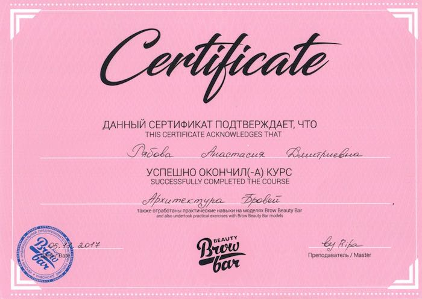
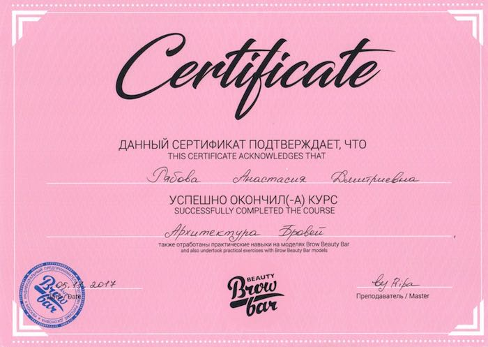
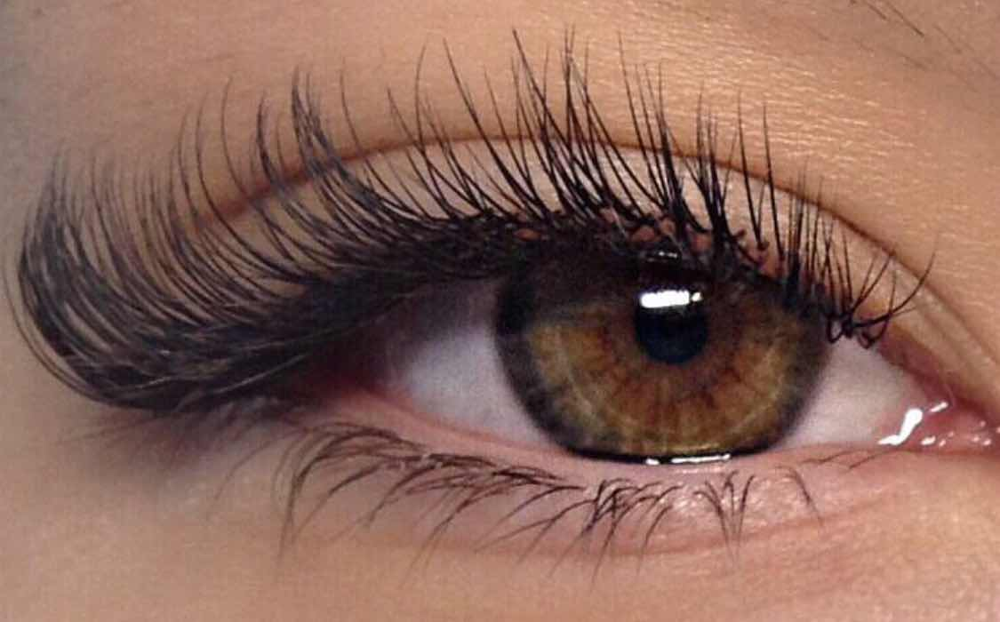
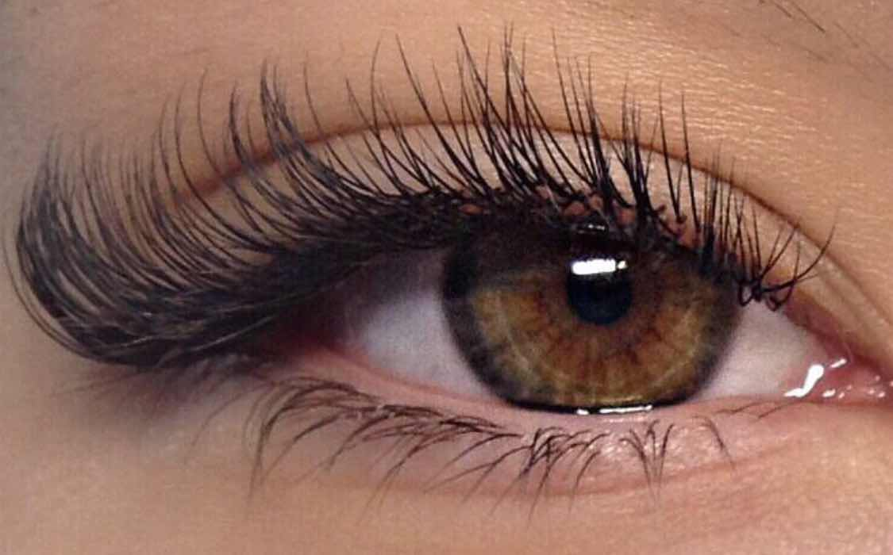
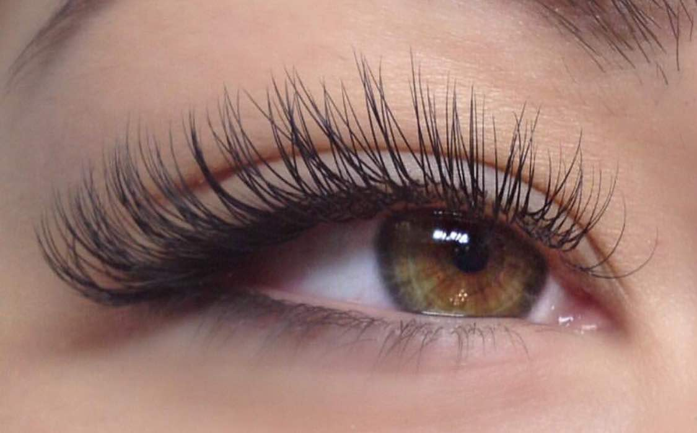
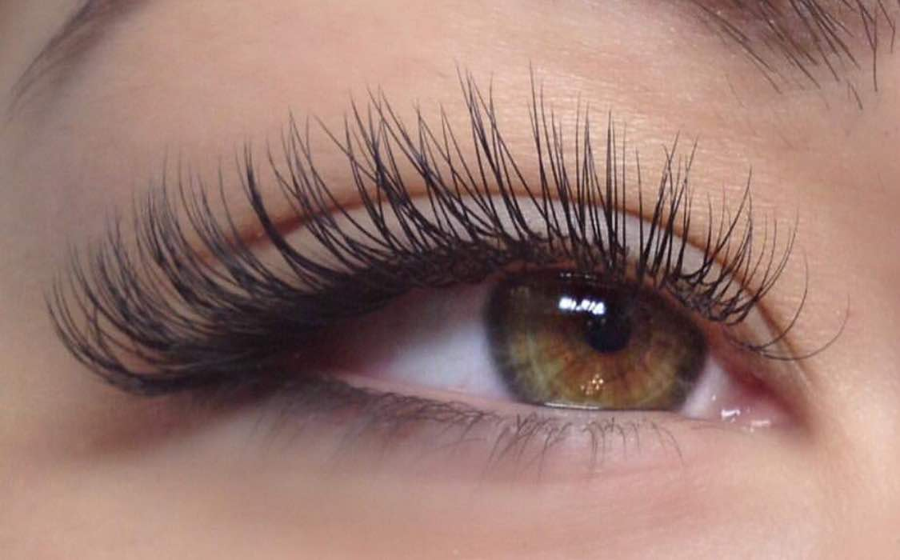

Всем привет!
Меня зовут Настя
Я - дипломированный специалист в области наращивания ресниц.
Немного обо мне:
- ♥ Я владею навыками классического поресничного наращивания по японской технологии и техникой объемного наращивания.
- ♥ Я окончила несколько лучших школ Москвы в данной сфере. Кроме того, я постоянно повышаю уровень своей квалификации и стараюсь быть в курсе инновационных технологий и модных тенденций в lash-индустрии.
- ♥ Эстетике взгляда я уделяю особое внимание, ведь не даром говорят, что глаза - это зеркало души!
- ♥ Я уважаю своих клиентов и свой труд, поэтому работаю только на высококачественных материалах класса ПРЕМИУМ.
 

Посетите мои процедуры и вы сможете не только стать обладательницами роскошных ресниц, но и комфортно отдохнуть в расслабляющей обстановке.К своей работе я подхожу ответственно и со всей душой. Для меня наращивание ресниц - это настоящее искусство.
Наращиваие ресниц:
Профессиональный подход к красоте ресниц и бровей!
У меня нет секретов от вас!
Я подбираю идеальный вариант наращивания (2D, 3D и др.), смоделирую его исходя из формы глаз и черт лица и ваших пожеланий. Тщательный подбор материала, комфортные и безопасные условия проведения процедуры – залог ваших идеальных ресниц. Выбираем длину и толщину ресничек
Толщина ресничек варьируется от 0,07 - 0,15 мм.
А длина от 8 до 14 мм.
Я помогу подобрать для Ваc оптимальный вариант (натуральный, лисий, беличий, кукольный эффекты,лучики,эффект подводки ), учитывающий форму Ваших глаз, лица, цвета волос. Цвета ресниц: черный, темно-коричневый, а также: красный, синий, зеленый, желтый, розовый, фиолетовый и другие цвета. Цветные реснички на праздник или торжество. Я дам вам подробную консультацию и отвечу на все вопросы.
 

 


Классическое наращивание
подойдёт тем, кто первый раз решил нарастить реснички. Результат будет выглядеть как если бы вы просто накрасили ресницы хорошей удлиняющей тушью. Наращивание делается на каждую ресницу: одну искусственную на одну натуральную."
Время - 1 час 20 минут.
Стоимость - 1200₽
Объемное наращивание 2Д
мы визуально увеличим вам количество ресниц в два раза. На одну ресничку наращивается две искусственных. При этом результат будет выглядеть очень естественно, так как для двойного объема я использую ресничку меньше чем для одинарного.
Время - 2 часа.
Стоимость - 1700₽
Объемное наращивание 3Д
для более эффектных глаз. Ваш взгляд получится ярким и притягивающим к себе внимание. На одну ресничку наращивается 3 искусственных.
Время - 3 часа.
Стоимость - 2200₽
Объемное наращивание 4Д,5Д,6Д
максимально яркий эффект, как у девушек из рекламных роликов. Это такие объемы, при которых используют максимально тонкие и невесомые ресницы. При этом, на одну натуральную ресничку клеится пучок из 4, 5 или 6 искусственных ресниц.
Время - 3 часа 30 минут.
Стоимость - от 2700₽
Архитектура Бровей:
Моделирование, коррекция и окрашивание бровей – важный штрих в создании идеального образа. И только опытный и квалифицированный мастер подарит вам удовольствие от результата даже спустя несколько недель после процедуры.
В процедуру «Архитектуры бровей» входит:
- ♥ Консультация
- ♥ Прорисовка эскиза
- ♥ Моделирование
- ♥ Окрашивание
- ♥ Коррекция воском
- ♥ Make-Up Бровей
Время - 1 час.
Стоимость - 800₽
Представления о прекрасном сочетаются с модными тенденциями и воплощаются посредством качественных материалов в умелых руках – так и создается естественная красота вашего образа!


Услуги и цены
| Классическое наращивание | 1200₽ |
|---|---|
| Объемное наращивание 2Д | 1700₽ |
| Объемное наращивание 3Д | 2200₽ |
| Объемное наращивание 4Д | 2700₽ |
| Объемное наращивание 5Д | 3200₽ |
| Объемное наращивание 6Д | 3700₽ |
| Растушёвка (дополнительный объём на кончиках глаза) | 300₽ |
| Коррекция (до трех недель) | 1000₽ |
| Дополнить цветными ресницами | 300₽ |
| Снятие (не моя работа) | 300₽ |
| Снятие (моя работа) | Бесплатно |
| Архитектура бровей | 800₽ |

О сертификате:
Сертификат на наращивание ресниц — идеальный подарок стильной и современной девушке!
Длинные густые ресницы — мечта всех девочек. Подарочный сертификат на наращивание ресниц — это возможность обрести шикарный выразительный взгляд без всяких хлопот и туши! Всего одна процедура, и можно надолго забыть об утреннем макияже для глаз и чувствовать себя уверенной, неотразимо красивой и счастливой каждый день :)
С подарочным сертификатом и вы можете выбрать любую услугу по наращиванию ресниц. Реализовать подарочный сертификат на наращивание ресниц вы можете в течение 2 месяцев с момента продажи.
Что будет с ресницами после снятия?
Состояние родных ресниц после наращивания напрямую зависит от качества работы. Важно не совершать ошибок, которые приведут к поломке и редению натуральных ресничек - не склеивать ресницы между собой, не брать излишков клея, правильно подбирать длину и толщину ресниц. За этим я очень тщательно слежу и регулярно прохожу курсы повышения квалификации.
Можно ли мочить ресницы?
(принимать душ, посещать сауну, плавать в море или бассейне)
Да, ресницы мочить можно. Вы сможете спокойно поехать с ними в отпуск, пойти в баню, посетить сауну или проплыть целый бассейн. Спустя 24 часа вы уже смело сможете умываться и принимать душ. И это никак не повлияет на срок носки ресниц.
Можно ли носить ресницы с линзами?
Можно! Во время наращивания большинство клиентов даже не снимает линзы, т.к. это никак не влияет на процесс работы мастера. Кроме того, линзы никак не повлияют на срок носки ресниц. Снимать и надевать линзы с ресницами будет так же легко, как и без них. А иногда линзы даже помогают: они защищают слизистую от испарений клея, и даже самые чувствительные клиенты не испытывают никакого дискомфорта во время наращивания!
На сколько хватает? Когда делать коррекцию?
Наращенные ресницы в среднем держатся 4 недели. Коррекция ресниц делается один раз в 3 недели. Коррекция позволяет восстановить первоначальный объём. Процесс коррекции: Сначала мастер снимает отросшие ресницы, а также те ресницы, которые плохо держатся. Затем проверяет все ресницы и оставляет только те, которые можно откорректировать. После того как мастер убрал лишние ресницы, он приступает к стандартной технологии наращивания. Обычно время коррекции почти такое же как и при новом наращивании, так как снятие отросших занимает некоторое количество времени.
Как снимать?
В большинстве случаев снятие ресниц не требуется, так как выпадают они равномерно, а не кусками. Постепенно искусственные ресницы отпадают, уступая место родным ресничкам. Через 3-4 недели остается примерно 20-30% от первоначального объема. К этому моменту можно идти на коррекцию или снять ресницы. ЕСЛИ ВЫ РЕШИЛИ СНЯТЬ РЕСНИЦЫ то вам понадобится специальное средство, которое называется ремувер для ресниц. Только один тип ремувера подойдет для домашнего снятия: это кремовый ремувер или паста, он безопасен для слизистой и вы можете приобрести его для домашнего использования в нашей студии. Не пытайтесь снять ресницы маслом или другими подручными средствами! Клей не растворим никакими маслами!
Можно ли красить тушью?
Теоретически, конечно, можно. Вопрос: "Зачем?" Если вы нарастили ресницы и вам не хватило объема, хочется реснички погуще, тогда можно просто в следующий раз попросить мастера сделать больше объем или использовать более толстые реснички. И не пользоваться тушью (ведь для этого мы и делаем ресницы, чтоб облегчить себе жизнь). Когда вы будете смывать тушь, вам придется активно тереть ресницы, а это приведет к более быстрому выпадению ресниц.
Можно ли беременным?
Да, можно! Наращивание ресниц не противопоказано во время беременности, процедура абсолютно безопасны для мамочки и будущего малыша.
Как добраться от:
| Котельники | 470, 347 | остановка Арка | ||
|---|---|---|---|---|
| Люблино | 305 | остановка Арка | ||
| Алма-Атинской | 1063 | остановка Арка | ||
| Cтанция Люберцы | 20,21 | остановка Арка |
Адрес: Московская область,
город Дзержинский, остановка "Арка".